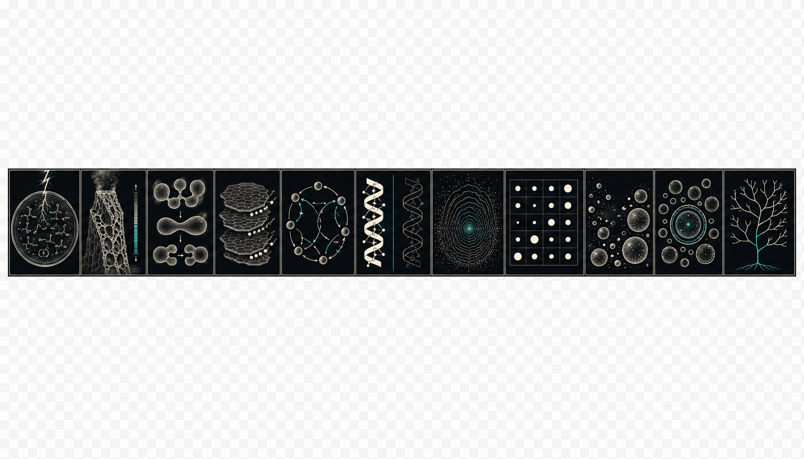
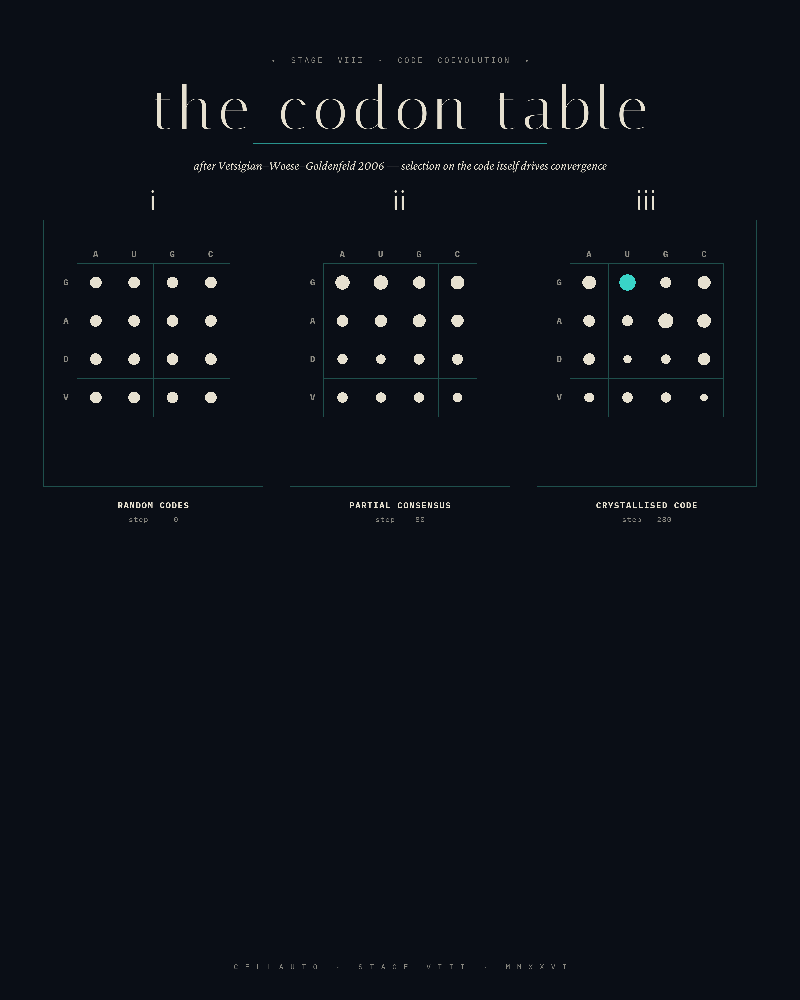
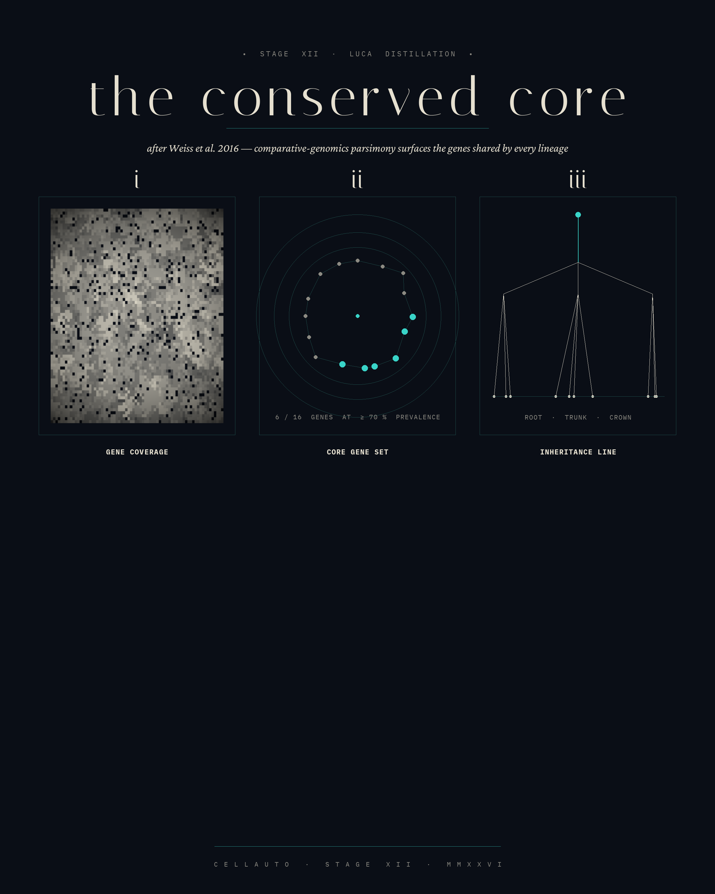
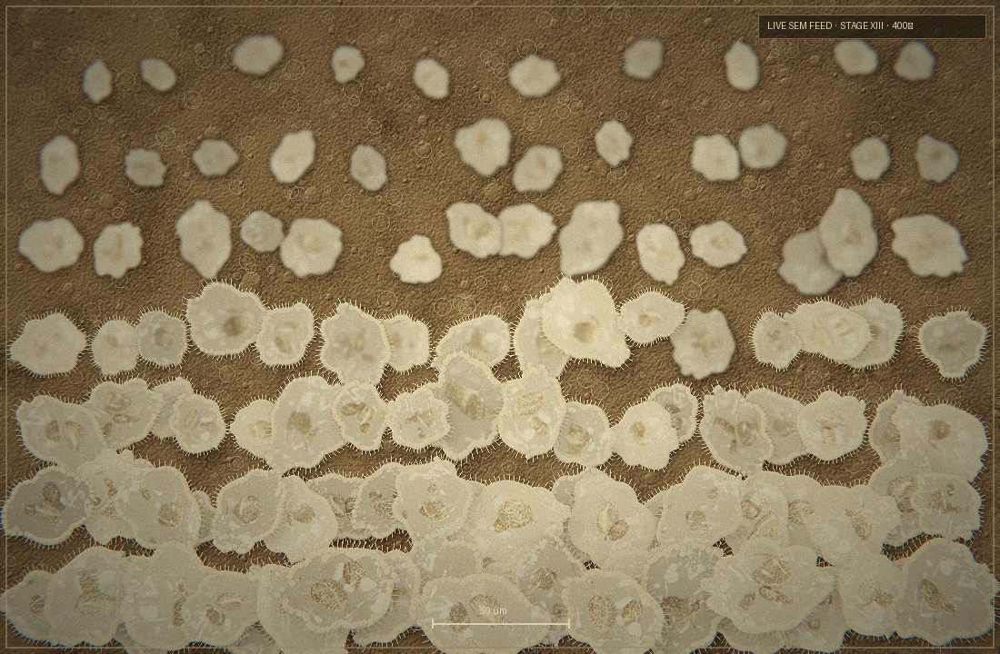
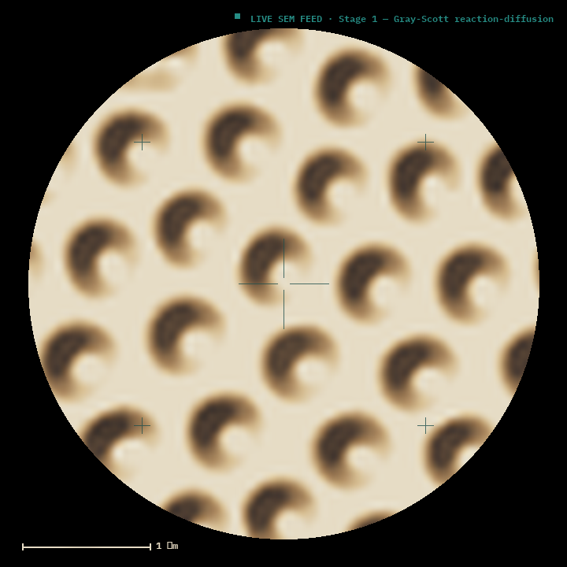
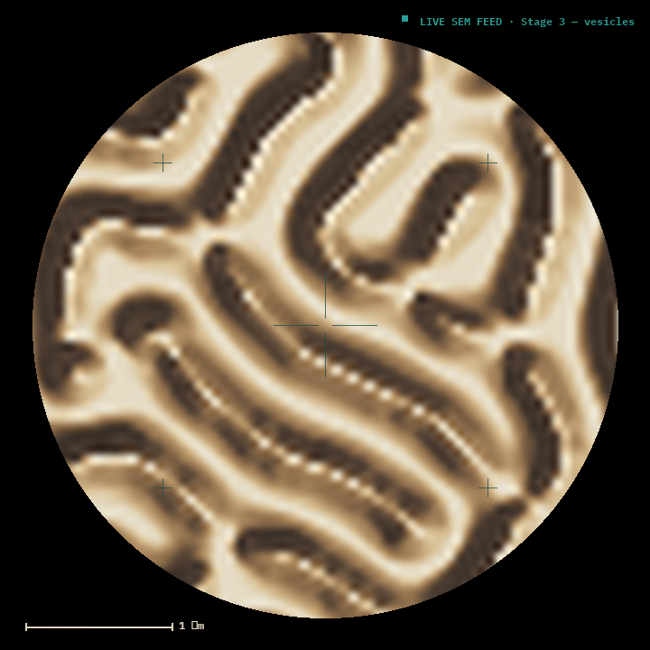
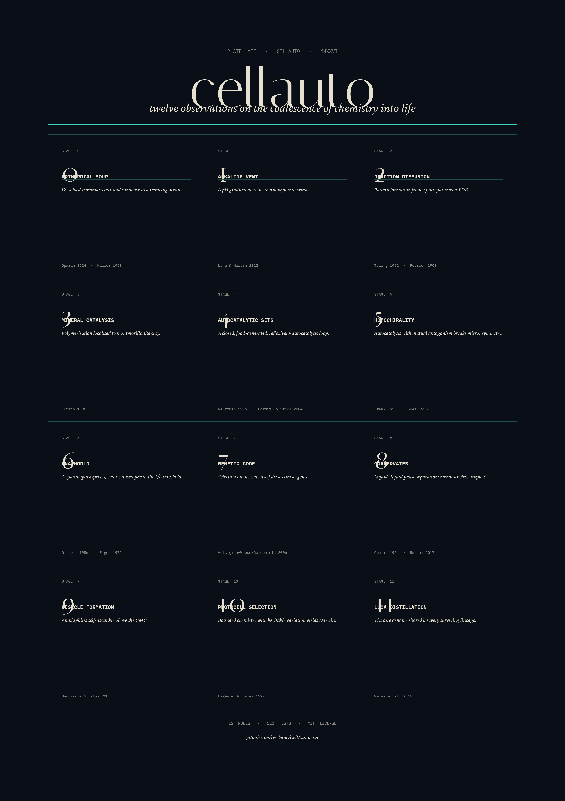

cellauto
From a reducing atmosphere to the first cell — thirteen stages of abiogenesis, each a real experiment you can run beside the micrograph it produces.
Thirteen stages, one apparatus
Each plate is a working experiment — a photoreal 3-D apparatus on the left, its live electron-micrograph on the right. Open any of them in the lab.
The plates
Rendered specimens from the pipeline — the look each stage's live feed reaches toward. Select any plate for the full image.
{kind=link}



{kind=link}

{kind=link}

{kind=link}

{kind=link}

{kind=link}


{kind=link}

A catalogue from a discipline that does not yet exist
cellauto documents the chemistry that becomes a thing that becomes itself. Each of the thirteen stages is a real cellular-automaton or reaction simulation — Gray–Scott reaction–diffusion, autocatalytic (RAF) sets, lipid vesicles, the RNA world, the genetic code, protocell selection, and a digital-life capstone of self-replicating virtual-CPU organisms — rendered both as a photoreal laboratory apparatus and as the live electron-micrograph it would produce.
“The aesthetic of the scientific plate held a moment too long — the moment when systematic notation tips into devotion. Colour is information; abundance is poverty.”
The interface is built in Catalytic Silence: a deep obsidian ground, a luminous teal and a counterpoint magenta spent only as events, museum typography, and the composition of the vitrine rather than the dashboard.